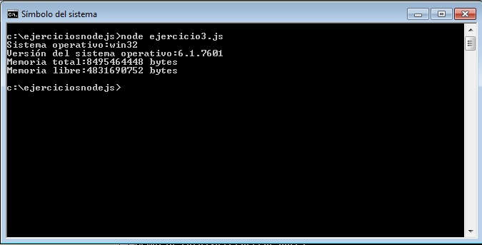

Hemos visto que para utilizar la funcionalidad de un módulo en Node.js debemos llamar a la función require pasando entre comillas el nombre del módulo.
La plataforma Node.js incorpora una serie de módulos de uso muy común en los programas que los incorpora el núcleo de Node.js y que se encuentran codificados en C++ para mayor eficiencia.
Para utilizar los módulos del núcleo también utilizamos la función require indicando el nombre del módulo.
Algunos de los módulos del núcleo de Node.js son: os, fs, http, url, net, path, process, dns etc..
Emplear el módulo "os" que provee información básica del sistema donde se ejecuta la plataforma del Node.js.
ejercicio3.js
var os=require('os');
console.log('Sistema operativo:'+os.platform());
console.log('Versión del sistema operativo:'+os.release());
console.log('Memoria total:'+os.totalmem()+' bytes');
console.log('Memoria libre:'+os.freemem()+' bytes');
Para hacer uso de un módulo del núcleo de Node.js solo hacemos referencia a su nombre:
var os=require('os');
Recordemos que cuando incorporamos un módulo que codificamos nosotros indicamos el path: var mat=require('./matematica');
La variable os almacena una referencia al módulo 'os' y mediante esta referencia podemos acceder a las variables, funciones, objetos etc. que el módulo exporta (debemos tener la documentación del módulo para poder utilizar su funcionalidad)
Como dijimos el módulo 'os' tiene una serie de métodos que nos informan el ambiente donde se está ejecutando Node.js como puede ser el sistema operativo donde está instalado, la versión del sistema operativo, la cantidad de memoria ram disponible, memoria libre etc.
El el sitio nodejs.org podemos consultar la documentación de cada uno de los módulos del núcleo:consulta del módulo 'os'
El resultado de ejectuar este programa en la consola (recordemos que este script se ejecuta en forma local, máa adelante veremos las herramientas que nos provee Node.js para desarrollar programas que se ejecutan en un servidor de internet y los podamos consumir desde un navegador por ejemplo):

Confeccionar un programa que requiera el módulo 'os' para recuperar el espacio libre de memoria. Mostrar inicialmente el epacio libre mediante el método freemem()
Luego crear un vector y mediante el método push almacenar 1000000 de enteros. Mostrar luego de la creación y carga del vector la cantidad de espacio libre.
Llamar al archivo ejercicio4.js
var os=require('os');
console.log('Memoria libre:'+os.freemem());
var vec=[];
for(var f=0;f<1000000;f++) {
vec.push(f);
}
console.log('Memoria libre después de crear el vector:'+os.freemem());